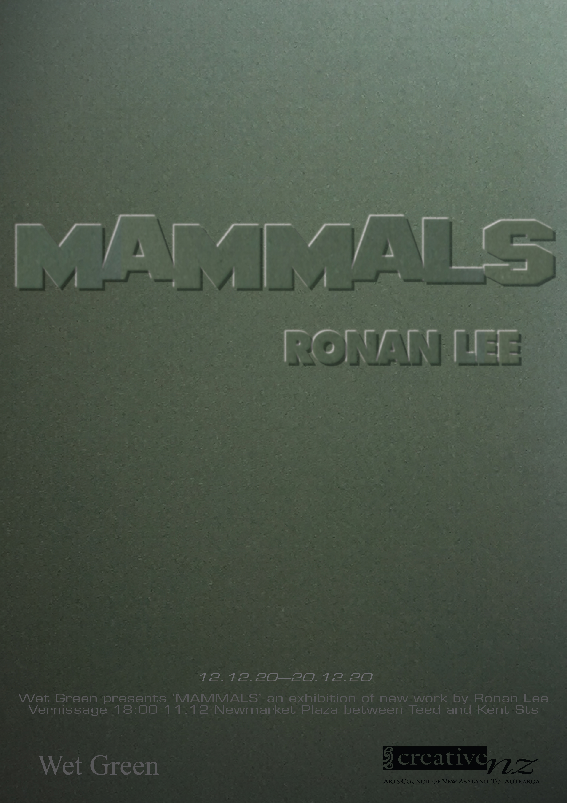

Exhibition
Wet Green is pleased to present Mammals, an exhibition of new artworks by Ronan Lee.
In an address both pointed and circuitous, Mammals draws on ideas surrounding isolation, fraying subjectivities and collective identity. Framed images show re-lensed wildlife photography, manipulated and overlaid with resin raindrops; while sculptural elements signify the artistic process.
By turns wry and melancholy, the photographs form part of Lee's 'Ideological Drift' series, anongoing project that the artist has been working on since 2018. The term ideological drift was conceived by legal scholar Jack Balkin as the possible co-option of ideas from their original contexts to serve sometimes contradictory and unexpected aims. Mammals is a mise-en-scène of social, political and cultural observation
The exhibition will be accompanied by a text by artist and researcher Dorota Broda.
Poster
 View
Bio
Ronan Lee (b. 1992) is an artist based in Tāmaki Makaurau. He is a founding board member at Samoa House Library (2017-current) and is part of the artist collective who founded Neo Gracie (2019). Lee graduated with an MFA from Elam School of Fine Arts in 2019 and exhibited recently at TCB art inc in Melbourne (2019) and Window gallery in Auckland (2018).